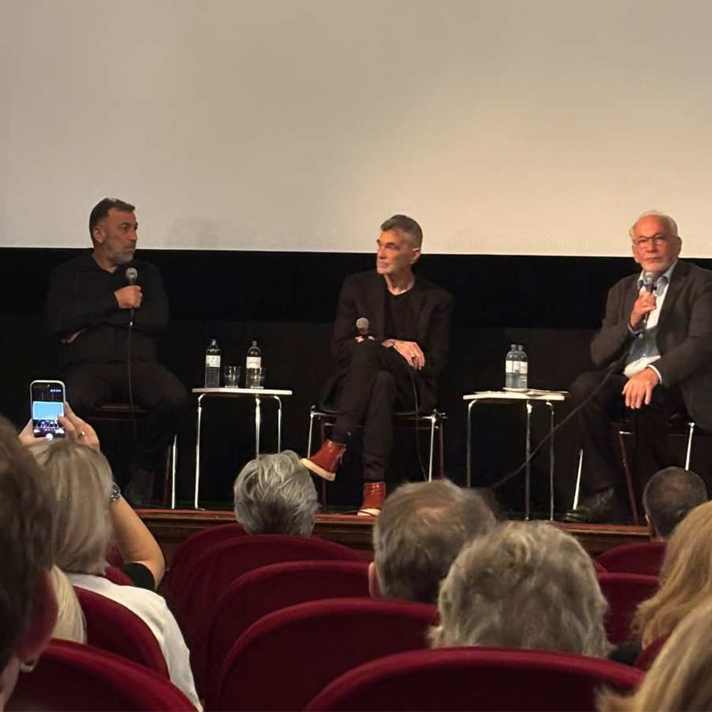
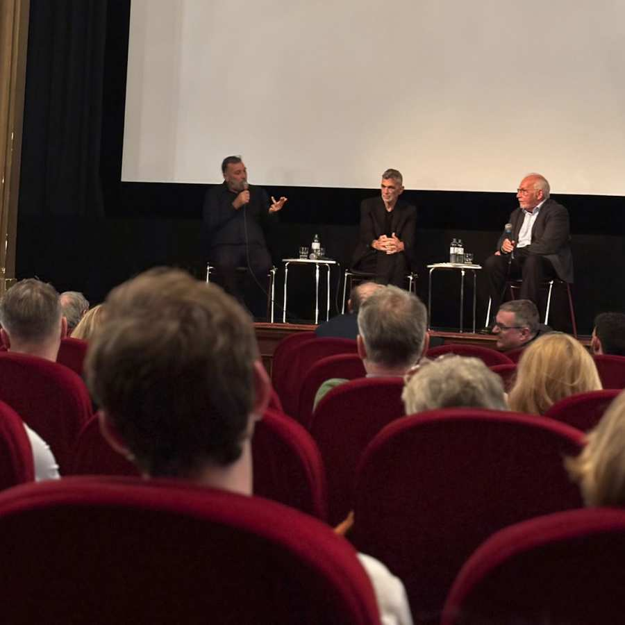
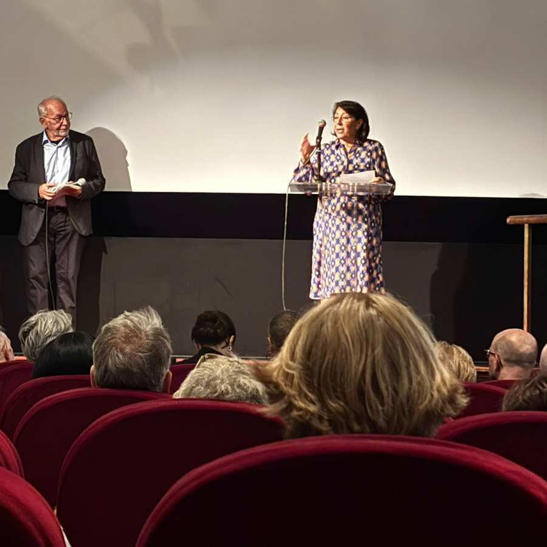
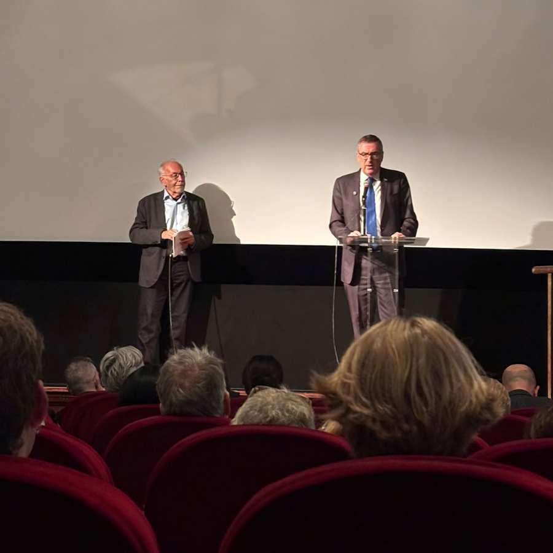
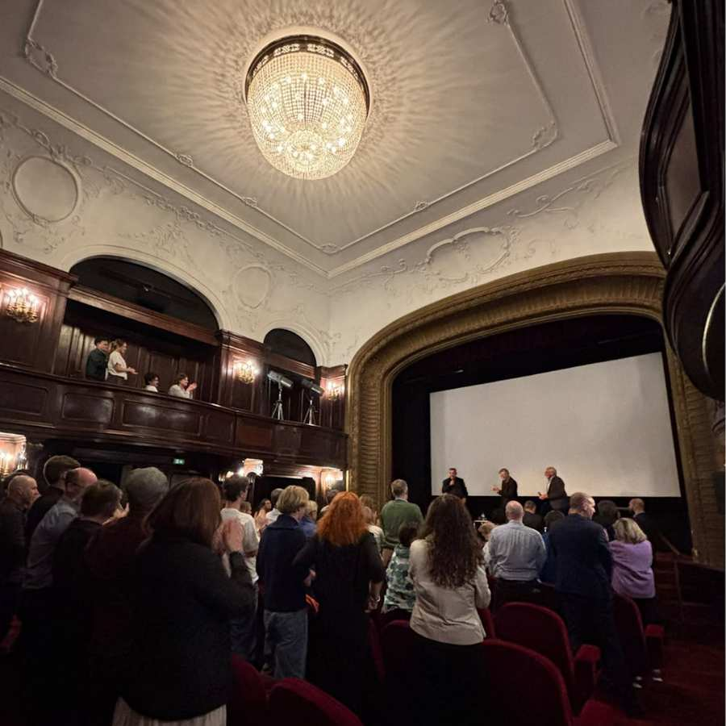

© IKG.Культура
Аншлаговый кинотеатр метро, фильм о необычайном мужестве и личной встрече с человеком, пережившим события 7 октября 2023 года: 7 октября IKG.Kultur совместно с Еврейским киноклубом и посольством Государства Израиль представил документальный фильм «Список страны Оз» – через три года после теракта 7 октября 2023 года.
В центре внимания фильма Оз Дэвидиан. Утром 7 октября он неоднократно выезжал в район фестиваля «Нова» и спас от террористов более 120 молодых людей. Тот факт, что Оз Давидиан был гостем в «Метрокино» вместе с режиссером Джиди Мароном, придал вечеру особую и трогательную окраску.
В ходе последовавшей дискуссии о фильме, модератором которой выступил Фрэнк Штерн, Оз Давидиан и Джиди Марон рассказали о событиях того дня, создании фильма и опыте, который до сих пор оказывает влияние.
Этот опыт оставил глубокие следы. Оз Давидиан открыто говорит о том, что посттравматические последствия 7 октября останутся с ним на всю оставшуюся жизнь. И все же он извлекает из своего опыта и кое-что положительное: более 120 человек, которых он спас и которых он ласково называет «своими детьми», через три года уехали — некоторые поженились, у других появились собственные дети. Оз стал частью ее большой семьи. Для него это как раз знак того, что из дня невообразимого ужаса может возникнуть новая жизнь и надежда.
В конце вечера публика продолжительными аплодисментами и овацией стоя поблагодарила Оза Давидяна за его необычайное мужество и неустанные усилия, которыми он спас в тот день столько жизней.
Любой, кто не смог присутствовать на этом особенном вечере, имеет возможность посмотреть «Список Оза» на ORF ON. Фильм также транслировался на канале ORF 2 в рамках «Weltjournal».
Впечатления





IKG.Культура
Открыть ссылку напрямую?
IKG.Культура
Открыть ссылку напрямую?
IKG.Культура
Открыть ссылку напрямую?
IKG.Культура
Открыть ссылку напрямую?
IKG.Культура
Открыть ссылку напрямую?
Связанный контент

Мирна Функ вдохновляет своим новым романом «Балаган»